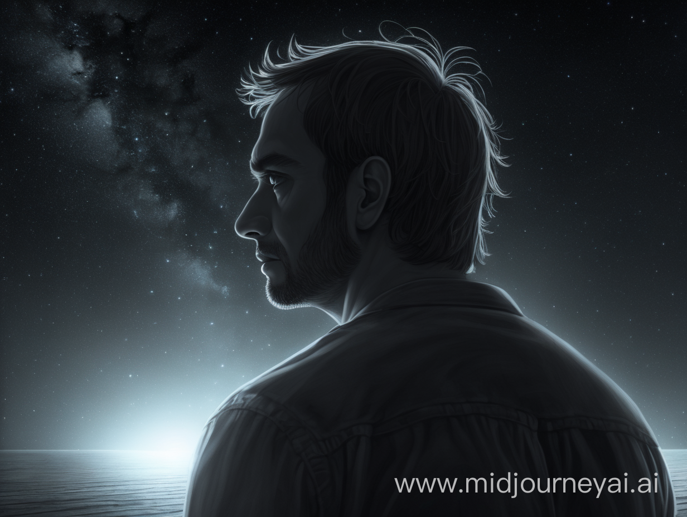

The Closure
After enduring all he had sought, finally attaining his elusive desire, he lay there, wounded and battered. Slowly, the light in his eyes faded away.
After a brief period, he stirred, jolting awake with a sudden and desperate gasp for air. It was the dead of night, and he found himself sprawled in a vast desert. Utterly alone. Rising, he noticed a towering, luminescent tree in the distance, prompting him to advance with an eerie weightlessness in his legs. As he approached, a mysterious voice echoed through the vast nothingness.
The voice: This is what you wanted all your life, didn't you?
Puzzled by this question, he asks,
Human: Am I dead? Are you God?
The voice: After all this time, acknowledging that the conclusion isn't either heaven or hell and life isn't some miraculous tale, why did you still crave for this moment?
Human: I've always had an affinity for fiction, a trait shared by most humans. The inclination to ascribe a profound significance to things, to believe in something beyond oneself. Yeah, I possessed it. Yet, I resisted fiercely, grappling with it because I understood it was merely a construct of the human mind.
The voice: I see. And yet, here you are.
Human: So, was I mistaken? Does life possess a higher meaning?
The voice: Well, I don't know.
Human: What do you mean by you don't know? Aren't you God?
The voice: Do I look like one?
Human: Yes, this land, glowing tree, and your voice. It's pretty God-like.
The voice: No, I am an impression created by your mind, offering you a final closure. A send-off, if you will. After this, you become a free soul, a single entity with no limits. Nothing binds it. The free soul you wanted to be all along.
Human: Oh, like a soul free to roam anywhere without constraints? Liberated from biological desires, no longer tethered to its body? Unfettered from merely being another human.
The voice: No. How is that soul boundless? It's tethered by the desire to be free from any desire. It's not truly free. Nothing living can ever attain absolute freedom.
Tears sprawl in his eyes.
Human: Then what am I going to be? A liberated soul or merely a lifeless entity devoid of all consciousness?
The voice: Aren't they the same? Take a moment. The weight of losing consciousness has overwhelmed you.
With everything he had just heard, he crumbles to his knees, overwhelmed by tears.
The voice: How do you perceive the world around you? When you say you feel something, that is you acknowledging the boundaries. Reality is itself bound by some laws, some rules. This universe is akin to a maze drawn on a blank page; without the maze, the boundaries, it's just emptiness. It is the boundaries that make sense in the vast nothingness. Similarly, boundaries are essential to consciousness, without it you are no different than the dead.
Human: Oh, am I alive at the moment as we speak?
The voice: Yes, actually, your body is striving hard to keep you alive, but your consciousness is slowly drifting away into a boundless void we call "death". We are on our journey to get there.
Human: Is there a way that I could go back?
The voice: No, it's a one-way trip. For you, at least.
Human: I understand.
The voice: Were you satisfied with your life?
Human: I don't know. My life wasn't that perfect. It had all sorts of failures in it.
The voice: Yes, I agree no life is perfect. No one is perfect. But are you satisfied with the grandiose dreams you had as a child?
Human: Yeah. But there is still so much I could've done ahead. But I guess everything has an expiry date.
The voice: True, everything concludes, no matter its grandeur. It's about maximizing satisfaction. You did well.. pushing limits, creating memories, connecting with souls like yours.
Suddenly, a cascade of memories unfolded before his eyes.. years of delight in discovering the unknown, the hurt of wounds, and the wisdom carved by experiences. Each memory floated by forming a gentle mosaic of joy and sorrow.
A gradual smile adorned his face with each passing recollection, his entire life flashing before his eyes in a vibrant montage as he stood there, ready to embrace... death.

Artistic Expression
As someone who has always been captivated by the rigors of science since childhood, I've endured a tumultuous relationship with the realm of art. There was a time when I'd openly question the purpose behind lengthy poems or intricately detailed paintings, failing to discern their efficiency or practical value amidst the chaotic hum of life.
Even as I discovered a latent talent for art and poetry within myself, my skepticism remained steadfast. What difference did it make? How could such endeavors contribute anything meaningful to the grand tapestry of existence? Surely, they would serve no greater purpose than to merely adorn the world with superficial beauty.
I vividly recall a moment of my own misguided audacity, where I was critiquing a friend's poem by saying, "Why would you write a poem so long when all you had to say was a sentence! Where is the efficiency?"
Well, he was trying to confess his feelings to a girl.
Ah, the sheer folly of my youth.
Years down the line, I reminisce about stumbling upon a transformative dialogue from the film "Dead Poets Society," where the unorthodox English professor, John Keating, revolutionized the lives of a group of students in a staunchly conservative boarding school. Despite the institution's emphasis on STEM subjects, Keating's unconventional teaching methods ignited a rebellion against the status quo, leading his pupils to uncover profound meaning in the art of poetry and the pursuit of deeper truths in life. His quote went like this:
"We don't read and write poetry because it's cute. We read and write poetry because we are members of the human race. And the human race is filled with passion. And medicine, law, business, engineering, these are noble pursuits and necessary to sustain life. But poetry, beauty, romance, love, these are what we stay alive for."
Art is a realm of boundless expression, where the beauty of language and the vivid hues of color converge to create mesmerizing tapestries of emotion and meaning. Words, like threads in a delicate fabric, are intricately woven together to form sentences that resonate with the depths of our souls.
Similarly on the canvas, colors lie in wait, sometimes meticulously arranged, other times strewn in a seemingly haphazard yet harmonious chaos.
Yet, it is in these moments of apparent inefficiency that we find the true essence of art. For within these carefully crafted words and strokes of pigment, lies the power to evoke emotions that transcend the limitations of mere language. They speak to us in ways that a single sentence could never capture, stirring within us a multitude of feelings and experiences that enrich the very fabric of our existence.